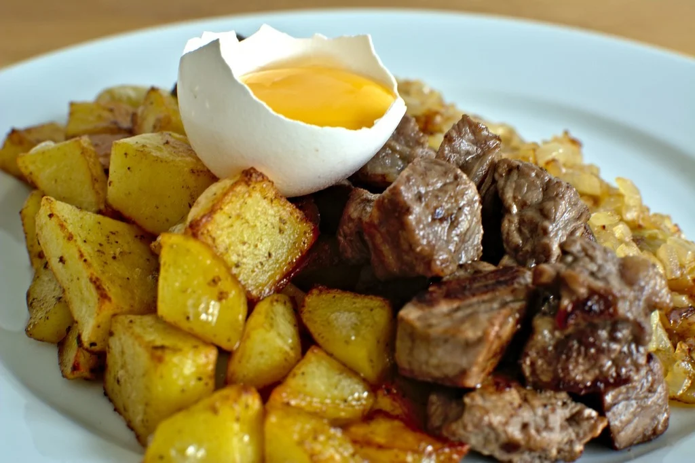

Home
Beef and Potatoes

Description
Kcal: 381
Fat: 12
Carbs: 23
Protein: 45
Ingredients
- 200g 3% beef
- 150g potatoes
- 150g broccoli
- 6 omega-3 caps
Steps
- Bring the beef to a simmer in a pot with water for 2 h.
- Bring the potatoes to a simmer in a pot with water for 30 min.
- Microwave the broccoli for 3 min.
- Mix everything together.
- Take omega-3 separately for healthy fats.